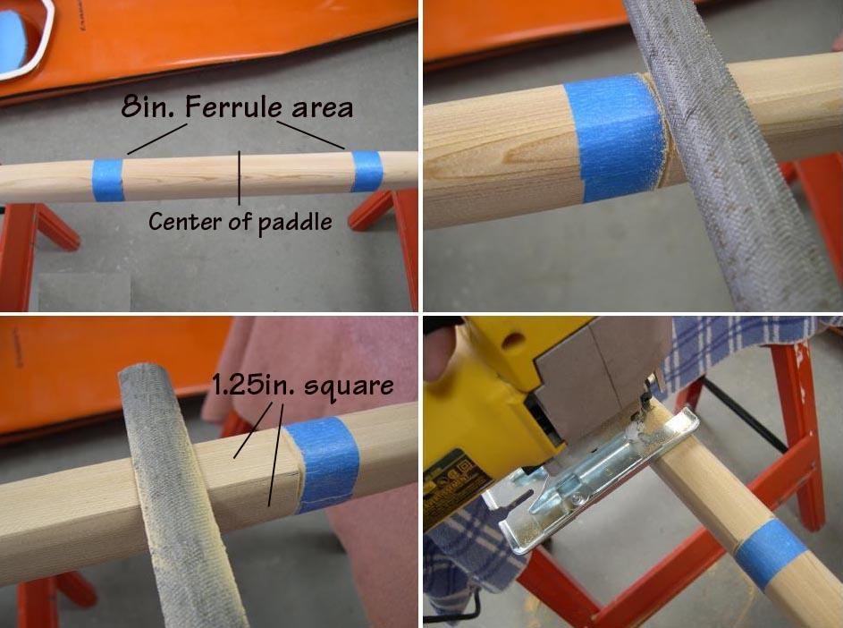

| Take-Apart Paddle Construction | Menu Previous Page Next Page |
|
 The first step in making the paddle into a take-apart is to mark off the center 8" of the loom with tape. This equals the length of the fiberglass ferrule. Use a file to make grooves around the outer edge of the 8in borders. These will serve as guides when rounding the loom. Next, use a file to square the 8in. ferrule area of the loom to 1.25" from it's original 1.5in. All four sides of the 8in ferrule section will now be 1.25in, making it easier to keep the loom in alignment after the paddle is cut in two and rounding of the ferrule area begins. Once this is complete cut the paddle in two at it's center. |
|